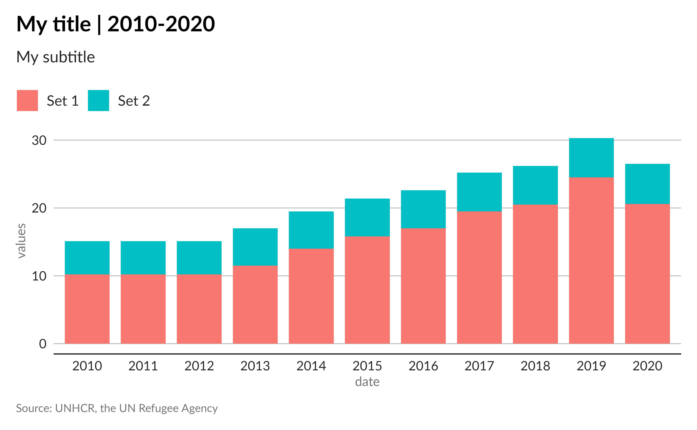
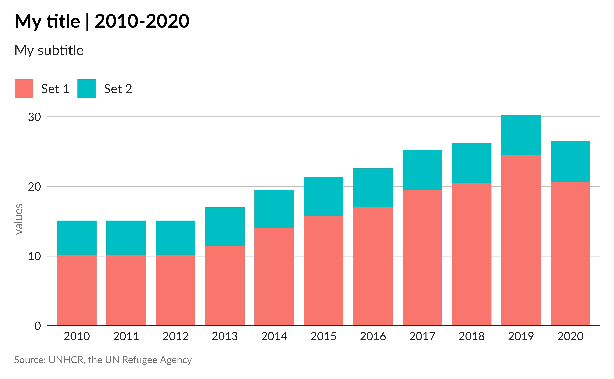
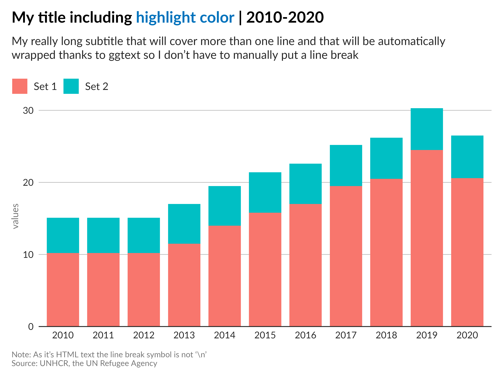
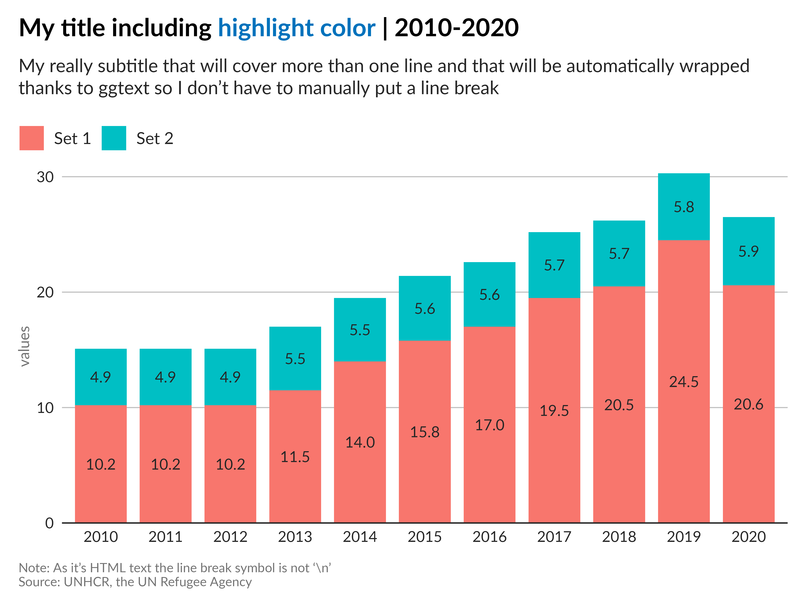
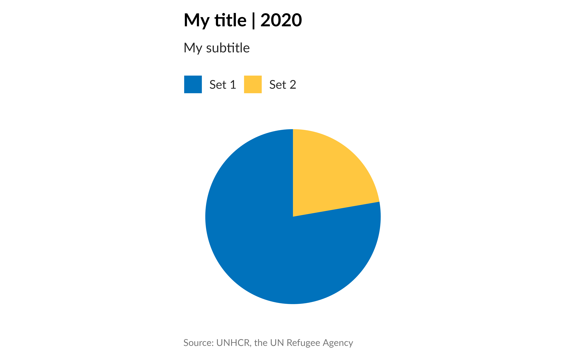

The unhcrthemes package provides tools to create ggplot2 visualizations that adhere to the United Nations High Commissioner for Refugees (UNHCR) data visualization guidelines.
One of the main functions, theme_unhcr, allows for the
easy application of UNHCR theme to your ggplot2
graphics.
Parameters of theme_unhcr
The theme_unhcr function comes with various parameters
to customize your plot:
-
font_family: Sets the base font family, default is “Lato”. -
font_size: The base font size in points, default is 12. -
plot_title_size: Adjusts the plot title size relative to the base font size. -
plot_title_margin: Sets the bottom margin of the plot title. -
subtitle_size: Sets the font size for subtitles. -
subtitle_margin: Sets the bottom margin for subtitles. -
strip_text_size: Adjusts the facet label font size. -
strip_text_face: Sets the font face for facet labels, default is “bold”. -
strip_text_just: Determines the justification for facet labels. -
caption_size: Sets the font size for captions. -
caption_margin: Sets the top margin for captions. -
axis_text: Toggles the axis text on or off. -
axis_text_size: Sets the font size for axis text. -
axis_title: Toggles the axis title on or off. -
axis_title_size: Sets the font size for axis titles. -
axis: Toggles the axis on or off. -
axis_ticks: Toggles the axis ticks on or off. -
grid: Controls the display of grid lines. -
legend: Toggles the legend on or off. -
legend_text_size: Sets the font size for legend text. -
legend_title: Toggles the legend title on or off. -
legend_title_size: Sets the font size for legend titles. -
plot_margin: Sets the margin around the plot. -
plot_background: Sets the background color of the plot. -
void: IfTRUE, removes all grid lines, ticks, and axes.
Usage
After loading the unhcrthemes package, you can apply
the theme to any ggplot2 chart, by simply adding
theme_unhcr at your call. For example:
# Load packages
library(ggplot2)
#> Error in get(paste0(generic, ".", class), envir = get_method_env()) :
#> object 'type_sum.accel' not found
library(unhcrthemes)
# Create some data
df <- data.frame(
date = factor(rep(2010:2020, 2)),
val = c(
10.2, 10.2, 10.2, 11.5, 14,
15.8, 17, 19.5, 20.5, 24.5, 20.6,
4.9, 4.9, 4.9, 5.5, 5.5, 5.6,
5.6, 5.7, 5.7, 5.8, 5.9
),
set = rep(c("Set 1", "Set 2"), each = 11)
)
# Base plot with theme_unhcr()
ggplot(
data = df,
aes(x = date, y = val, fill = set)
) +
geom_col(
position = position_stack(reverse = TRUE),
width = 0.8
) +
labs(
title = "My title | 2010-2020",
subtitle = "My subtitle",
x = "date",
y = "values",
caption = "Source: UNHCR, the UN Refugee Agency"
) +
theme_unhcr()The theme comes with some default settings, but you can customize most of it by adding parameters to the function call, as we will explore below.
Grid
The grid parameter controls the display of both major
and minor grid lines in your plot. By default, major grid lines are
visible and minor ones are hidden.
Using grid = "XY" adds both major X and Y grid lines,
grid = "X" adds only major X grid lines,
grid = "Y" adds only major Y grid lines, and
grid = FALSE removes all grid lines. You can add minor grid
lines by using lowercase "xy", "x" or
"y". For example, let’s keep only the major Y grid
lines:
ggplot(
data = df,
aes(x = date, y = val, fill = set)
) +
geom_col(
position = position_stack(reverse = TRUE),
width = 0.8
) +
labs(
title = "My title | 2010-2020",
subtitle = "My subtitle",
x = "date",
y = "values",
caption = "Source: UNHCR, the UN Refugee Agency"
) +
theme_unhcr(
grid = "Y" # Only major Y grid lines
)Axis
Unsurprisingly, the axis represents the axis lines. However, it also includes different axis elements such as the axis title, axis text, and axis ticks.
Axis lines
To control the visibility of axis lines, you can use the
axis parameter in the theme_unhcr function. By
default, this parameter is set to FALSE, which turns off
all the axis lines. Using axis = "XY" (or
axis = TRUE) adds both X and Y axis,
axis = "X" adds only the X axis, axis = "Y"
adds only the Y axis, and axis = FALSE removes all axis
elements. For example, let’s add only the X axis:
ggplot(
data = df,
aes(x = date, y = val, fill = set)
) +
geom_col(
position = position_stack(reverse = TRUE),
width = 0.8
) +
labs(
title = "My title | 2010-2020",
subtitle = "My subtitle",
x = "date",
y = "values",
caption = "Source: UNHCR, the UN Refugee Agency"
) +
theme_unhcr(
grid = "Y",
axis = "X" # Only X axis
)
Not quite the result we expected! This is because
ggplot2 comes, by default, with some expansion around the
axis to create some room. To remove this extra space, you can use the
expand argument in the scale_x_* or
scale_y_* function.
Modify the axis expansion:
In this example, we will set the expand argument to
expansion(c(0, 0.01)) for the y axis to remove the unwanted
space, effectively “expanding” the axis by removing the space at the
axis origin and adding a small padding at the other end.
ggplot(
data = df,
aes(x = date, y = val, fill = set)
) +
geom_col(
position = position_stack(reverse = TRUE),
width = 0.8
) +
labs(
title = "My title | 2010-2020",
subtitle = "My subtitle",
x = "date",
y = "values",
caption = "Source: UNHCR, the UN Refugee Agency"
) +
scale_y_continuous(
expand = expansion(c(0, 0.01)) # Remove axis expansion
) +
theme_unhcr(
grid = "Y",
axis = "X"
)Axis title and text
To control the visibility of axis titles and text, you can use the
axis_title and axis_text parameters in the
theme_unhcr function. By default, these parameters are set
to TRUE, which turns on all the axis titles and text. Using
axis_title = FALSE removes both X and Y axis titles,
axis_title = "X" adds only the X axis title,
axis_title = "Y" adds only the Y axis title, and
axis_title = TRUE adds all axis titles. Similarly,
axis_text = TRUE adds both X and Y axis text,
axis_text = "X" adds only the X axis text,
axis_text = "Y" adds only the Y axis text, and
axis_text = FALSE removes all axis text. For example, let’s
keep only the Y axis title:
ggplot(
data = df,
aes(x = date, y = val, fill = set)
) +
geom_col(
position = position_stack(reverse = TRUE),
width = 0.8
) +
labs(
title = "My title | 2010-2020",
subtitle = "My subtitle",
y = "values",
caption = "Source: UNHCR, the UN Refugee Agency"
) +
scale_y_continuous(
expand = expansion(c(0, 0.01))
) +
theme_unhcr(
grid = "Y",
axis = "X",
axis_title = "Y" # Only Y axis title
)
Axis ticks
Even if axis ticks aren’t part of the UNHCR data visualization
guidelines, they can sometimes be useful. To control the visibility
of axis ticks, you can use the axis_ticks parameter in the
theme_unhcr function. By default, this parameter is set to
FALSE, which turns off all the axis ticks. Using
axis_ticks = TRUE adds both X and Y axis ticks,
axis_ticks = "X" adds only the X axis ticks,
axis_ticks = "Y" adds only the Y axis ticks, and
axis_ticks = FALSE removes all axis ticks.
Text
Like all the chart elements, the different text elements, such as the
plot title, subtitle, caption, and more, can be controlled using the
theme_unhcr function. We encourage you, not to touch any of
these parameters, as they are part of the UNHCR branding and should be
used as is. However, you can still adjust the font size, font family,
margin or justification of each of these elements using, for example,
the plot_title_size, plot_title_margin, etc.
parameters.
On top of the theme_unhcr parameters, the
unhcrthemes package natively incorporates the
ggtext package for advanced text rendering in the title,
subtitle and caption components. To showcase this, you can use the
ggtext functionalities to include styled text directly in
your plots.
ggplot(
data = df,
aes(x = date, y = val, fill = set)
) +
geom_col(
position = position_stack(reverse = TRUE),
width = 0.8
) +
labs(
# Add some HTML style to the title
title = "My title including <span style='color:#0072BC;'>highlight color</span> | 2010-2020",
# Automatic wrapping of long text
subtitle = "My really long subtitle that will cover more than one line and that will be automatically wrapped thanks to ggtext so I don't have to manually put a line break",
y = "values",
# Line break in the caption, use <br> instead of \n
caption = "Note: As it's HTML text the line break symbol is not '\\n'<br>Source: UNHCR, the UN Refugee Agency"
) +
scale_y_continuous(
expand = expansion(c(0, 0.01))
) +
theme_unhcr(
grid = "Y",
axis = "X",
axis_title = "Y"
)
Add text labels
Text labels added with geom_text will also display using
the recommended font and style.
ggplot(
data = df,
aes(x = date, y = val, fill = set)
) +
geom_col(
position = position_stack(reverse = TRUE),
width = 0.8
) +
# Add geom_text
geom_text(aes(label = scales::number_format(accuracy = 0.1)(val)),
position = position_stack(vjust = 0.5, reverse = TRUE),
show.legend = FALSE
) +
labs(
title = "My title including <span style='color:#0072BC;'>highlight color</span> | 2010-2020",
subtitle = "My really subtitle that will cover more than one line and that will be automatically wrapped thanks to ggtext so I don't have to manually put a line break",
y = "values",
caption = "Note: As it's HTML text the line break symbol is not '\\n'<br>Source: UNHCR, the UN Refugee Agency"
) +
scale_y_continuous(
expand = expansion(c(0, 0.01))
) +
theme_unhcr(
grid = "Y",
axis = "X",
axis_title = "Y"
)
Color palettes
The unhcrthemes package also comes with the UNHCR
color palettes, which can be used in your plots. Use the
display_unhcr_all() function to show all the available
palettes. These palettes can be used directly in your plots using the
scale functions. For example, let’s use the default palette
in the scale_fill_unhcr_d() function:
ggplot(
data = df,
aes(x = date, y = val, fill = set)
) +
geom_col(
position = position_stack(reverse = TRUE),
width = 0.8
) +
labs(
title = "My title including <span style='color:#0072BC;'>highlight color</span> | 2010-2020",
subtitle = "My really subtitle that will cover more than one line and that will be automatically wrapped thanks to ggtext so I don't have to manually put a line break",
y = "values",
caption = "Note: As it's HTML text the line break symbol is not '\\n'<br>Source: UNHCR, the UN Refugee Agency"
) +
scale_y_continuous(
expand = expansion(c(0, 0.01))
) +
scale_fill_unhcr_d() +
theme_unhcr(
grid = "Y",
axis = "X",
axis_title = "Y"
)Void
To simplify the creation of pie/donut charts or maps, the
theme_unhcr function comes with a void
parameter. When set to TRUE, this parameter removes all
grid lines, ticks, and axes. For example, let’s create a pie chart:
ggplot(
data = dplyr::filter(df, date == 2020),
aes(x = date, y = val, fill = set)
) +
geom_col(
position = position_stack(reverse = TRUE),
width = 0.8
) +
labs(
title = "My title | 2020",
subtitle = "My subtitle",
y = "values",
caption = "Source: UNHCR, the UN Refugee Agency"
) +
scale_fill_unhcr_d() +
coord_polar(
theta = "y",
direction = -1
) +
theme_unhcr(
void = TRUE # Remove all grid lines, ticks, and axes
)
Conclusion
With unhcrthemes, creating UNHCR-compliant
visualizations in R is straightforward, providing a
consistent and branded look for your graphics.
For more information on each parameter and usage, visit the function documentation page and the UNHCR Data Visualization Platform